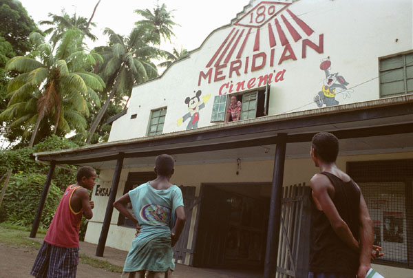

The documentary / Directed by Steve James
Reel
Paradise.
The Pierson family, a cinema in Fiji, and a year of free movies.

A family at the movies.
John and Janet Pierson moved to the Fijian island of Taveuni with their children, Georgia and Wyatt, to run the 180 Meridian Cinema. For a year, they showed movies to local audiences for free.
Filmed during the last month of their stay, Steve James’s Reel Paradise follows the family’s daily life, the cinema, and their relationships with the people around them. The experience brings friendships, cultural differences, family tensions, and packed screenings.
The original film site brings together the story behind the documentary, production credits, interviews, and photographs. Janet’s dispatches offer another perspective on the family’s time in Fiji.